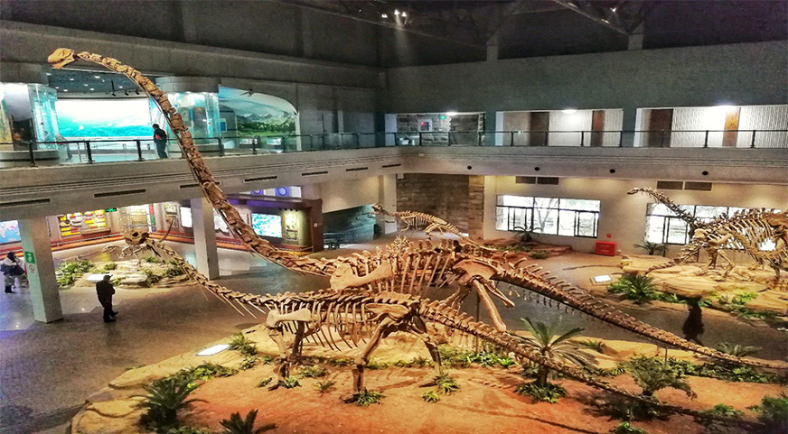

四川自贡是中国重要的恐龙化石产地。这一带侏罗纪（1.35亿年-2.1亿年前）的陆相地层相当发育，恐龙化石就埋藏在侏罗纪早、中期陆地层中，而此期的恐龙化石正是世界恐龙研究中的薄弱环节，所以自贡的恐龙化石为世界研究恐龙的演化，提供了丰富的关键性的原始资料。
自贡市东北郊大山铺恐龙化石发掘现场，距自贡市区11公里。是中国继半坡遗址和秦始皇兵马俑坑之后，又一大型现场博物馆。博物馆第一期工程占地面积为25000平方米，建筑面积6000平方米，分馆舍、绿化地带和附属建筑3部分。主体馆舍内设有化石埋藏馆、中央大厅、化石装架陈列馆、报告厅和恐龙生态环境厅。恐龙埋藏遗址有1900平方米，可见到多种恐龙的骨骼错落交织，分布在近水平状延伸的砂岩层中，是巨大恐龙墓地的缩影。在装架馆内，有近10米高的“天府峨眉龙”和多具恐龙的复原骨架组合，以及古脊椎动物化石标本。馆舍外形用天然砂岩石块堆垒而成，使整个建筑与恐龙发掘现场相协调，立意新颖，造型独特，引人入胜。大山铺发掘的各种恐龙及伴生物化石数以百计，组成了一个完整的“恐龙动物群”。其中包括了3个纲、11个目、15个科的属种，既有陆生、水生、两栖类，又有空中飞行的古脊椎动物；有长达20米的草食长颈椎蜥脚龙、凶猛的肉食恐龙和数量多而完整的短颈椎蜥脚龙，也有仅14米长的鸟脚龙。最珍贵的是世界上发掘最早的中侏罗纪剑龙和首次发现的翼龙，填补了恐龙演化史上的一段空白。自贡恐龙博物馆被评为“中国旅游胜地四十佳”之一。

大山铺恐龙化石群遗址位于四川省自贡市东北郊约11公里的大山铺镇旁，是一个盛产一亿六千万年前的中侏罗世恐龙及其它脊椎动物化石的遗址，是中国最重要的恐龙化石埋藏地，也是世界上最重要的古生物化石埋藏地之一。该遗址最早于1972年发现，1977 年首次发掘，获得一具较完整的蜥脚类恐龙骨架，1979 年因基建施工化石被大量暴露。1979~1984 年间先后组织三次大规模的清理和发掘，在约2800平方米范围内获得恐龙及其它脊椎动物200多个个体的上万件化石骨骼标本，从中已研究定名了恐龙鱼类、两栖类、龟鳖类、鳄类、翼龙类、似哺乳爬行类等18个属21 个种。估计整个化石群集中埋藏范围约17000平方米，化石骨骼10 万块以上， 被誉为"恐龙公墓"。八十年代中期，在该遗址上修建有我国第一座大型的恐龙遗址博物馆——自贡恐龙博物馆。
